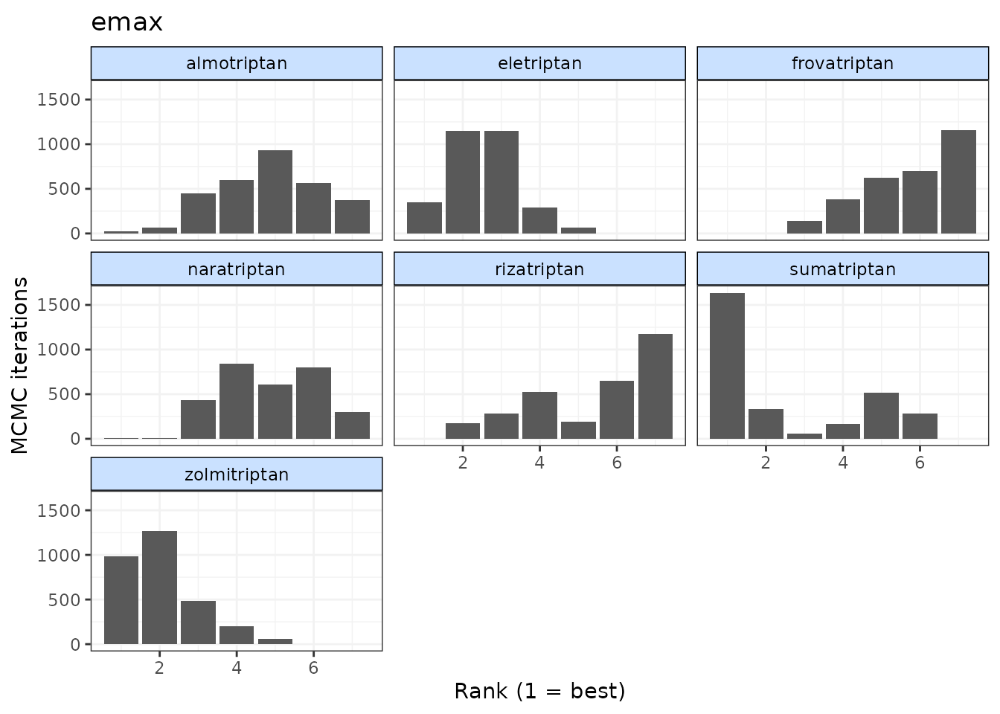
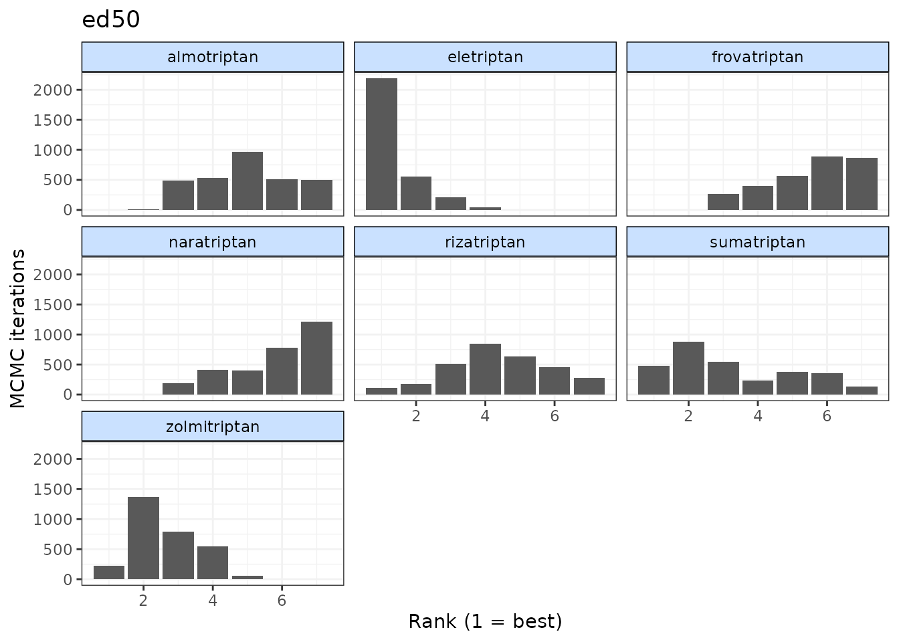

outputs-4.RmdFor looking at outputs from MBNMAdose we will demonstrate using results from an Emax MBNMA on the triptans dataset:
tripnet <- mbnma.network(triptans)
#> Values for `agent` with dose = 0 have been recoded to `Placebo`
#> agent is being recoded to enforce sequential numbering
trip.emax <- mbnma.run(tripnet, fun = demax(emax = "rel", ed50 = "rel"))
#> `likelihood` not given by user - set to `binomial` based on data provided
#> `link` not given by user - set to `logit` based on assigned value for `likelihood`
#> module glm loadedIt may be of interest to calculate relative effects between different doses of agents to obtain outputs that are more similar to those from standard NMA. A benefit of dose-response MBNMA is that relative effects between doses that have not been explored in trials can still be compared.
Relative effects can take the form of odds ratios, mean differences or rate ratios, depending on the likelihood and link function used in a model. Estimating relative effects can be particularly helpful for dose-response functions where parameter interpretation can be challenging (e.g. splines, fractional polynomials).
The get.relative() function allows for calculation of
relative effects between any doses of agents as specified by the user.
This includes doses not available in the original dataset, as these can
be estimated via the dose-response relationship. Optional arguments
allow for relative effects to be estimated at specific effect modifier
values (if meta-regression incorporated into MBNMA model), calculation
of 95% prediction intervals rather than 95% credible intervals (the
default), and for the conversion of results from the log to the natural
scale. The resulting relative effects can also be ranked (see Ranking for more details).
# Specify treatments (agents and doses) for which to estimate relative effects
treats <- list(Placebo = 0, eletriptan = 1, sumatriptan = 2, almotriptan = 1)
# Print relative effects on the natural scale
rels <- get.relative(trip.emax, treatments = treats, eform = TRUE)
print(rels)
#> ============================================================
#> Relative treatment comparisons (95% credible intervals)
#> ============================================================
#>
#> Placebo_0 5.4 (4.7, 6.2) 4 (3.6, 4.5) 2.3 (2, 2.8)
#> 5.4 (4.7, 6.2) eletriptan_1 0.75 (0.64, 0.87) 0.43 (0.35, 0.54)
#> 4 (3.6, 4.5) 0.75 (0.64, 0.87) sumatriptan_2 0.57 (0.48, 0.7)
#> 2.3 (2, 2.8) 0.43 (0.35, 0.54) 0.57 (0.48, 0.7) almotriptan_1
# Rank relative effects
rank(rels)
#>
#> ================================
#> Ranking of dose-response MBNMA
#> ================================
#>
#> Includes ranking of relative effects
#>
#> 4 relefs ranked with negative responses being `worse`
#>
#> RelativeEffects ranking (from best to worst)
#>
#> |Treatment | Mean| Median| 2.5%| 97.5%|
#> |:-------------|----:|------:|----:|-----:|
#> |eletriptan_1 | 1| 1| 1| 1|
#> |sumatriptan_2 | 2| 2| 2| 2|
#> |almotriptan_1 | 3| 3| 3| 3|
#> |Placebo_0 | 4| 4| 4| 4|get.relative() can also be used to compare results
between two different models by specifying which model’s relative
effects should be presented in the lower left diagonal
(lower.diag) of the table, and which should be presented in
the upper right diagnoal (upper.diag).
This can be used to compare relative effects estimated by MBNMA models fitted with different dose-response relationships, or to compare MBNMA estimates with NMA estimates.
nma <- nma.run(tripnet) # NMA (consistency) model
ume <- nma.run(tripnet, UME = TRUE) # UME (inconsistency) model
# MBNMA consistency and NMA consistency odds ratios compared
consistency <- get.relative(lower.diag = trip.emax, upper.diag = nma, treatments = treats,
eform = TRUE)
print(consistency)
#> ============================================================
#> Relative treatment comparisons (95% credible intervals)
#> ============================================================
#>
#> Placebo_0 5.8 (5, 6.7) 4.2 (3.8, 4.7) 2.8 (2.4, 3.2)
#> 5.4 (4.7, 6.2) eletriptan_1 0.73 (0.63, 0.85) 0.48 (0.39, 0.58)
#> 4 (3.6, 4.5) 0.75 (0.64, 0.87) sumatriptan_2 0.66 (0.56, 0.77)
#> 2.3 (2, 2.8) 0.43 (0.35, 0.54) 0.57 (0.48, 0.7) almotriptan_1It can also be used to compare NMA or MBNMA consistency models with Unrelated Mean Effects (UME) inconsistency models. A UME model only parameterises direct comparisons within the network and so can be used to test the consistency assumption ([Checking for consistency][3-consistencychecking.html]). Note that if a UME model is fitted, comparisons for which there is no direct evidence will not have relative effects estimated for them.
# MBNMA consistency and NMA inconsistency log-odds ratios compared
inconsistency <- get.relative(lower.diag = trip.emax, upper.diag = ume, treatments = treats,
eform = FALSE)
print(inconsistency)
#> ============================================================
#> Relative treatment comparisons (95% credible intervals)
#> ============================================================
#>
#> Placebo_0 NA NA NA
#> 1.7 (1.5, 1.8) eletriptan_1 NA 0 (0, 0)
#> 1.4 (1.3, 1.5) -0.29 (-0.44, -0.14) sumatriptan_2 NA
#> 0.83 (0.69, 1) -0.85 (-1, -0.62) -0.56 (-0.74, -0.35) almotriptan_1Forest plots can be easily generated from MBNMA models using the
plot() method on an "mbnma" object. By default
this will plot a separate panel for each dose-response parameter in the
model. Forest plots can only be generated for parameters which are
modelled using relative effects and that vary by agent/class.
plot(trip.emax)Rankings can be calculated for different dose-response parameters
from MBNMA models by using rank() on an
"mbnma" object. Any parameter monitored in an MBNMA model
that varies by agent/class can be ranked. A vector of these is assigned
to params. lower_better indicates whether
negative responses should be ranked as “better” (TRUE) or
“worse” (FALSE).
ranks <- rank(trip.emax, lower_better = FALSE)
print(ranks)
#>
#> ================================
#> Ranking of dose-response MBNMA
#> ================================
#>
#> Includes ranking of relative treatment effects from dose-response MBNMA:
#> emax ed50
#>
#>
#> 7 agents ranked with positive responses being `better`
#>
#> emax ranking (from best to worst)
#>
#> |Treatment | Mean| Median| 2.5%| 97.5%|
#> |:------------|----:|------:|----:|-----:|
#> |zolmitriptan | 2.02| 2| 1| 4|
#> |sumatriptan | 2.48| 1| 1| 6|
#> |eletriptan | 2.52| 3| 1| 4|
#> |almotriptan | 4.84| 5| 2| 7|
#> |naratriptan | 4.88| 5| 3| 7|
#> |rizatriptan | 5.46| 6| 2| 7|
#> |frovatriptan | 5.78| 6| 3| 7|
#>
#>
#> ed50 ranking (from best to worst)
#>
#> |Treatment | Mean| Median| 2.5%| 97.5%|
#> |:------------|----:|------:|----:|-----:|
#> |eletriptan | 1.37| 1| 1| 3|
#> |zolmitriptan | 2.62| 2| 1| 4|
#> |sumatriptan | 3.25| 3| 1| 7|
#> |rizatriptan | 4.40| 4| 1| 7|
#> |almotriptan | 4.99| 5| 3| 7|
#> |frovatriptan | 5.57| 6| 3| 7|
#> |naratriptan | 5.81| 6| 3| 7|
summary(ranks)
#> $emax
#> rank.param mean sd 2.5% 25% 50% 75% 97.5%
#> 1 eletriptan 2.524000 0.8942542 1 2 3 3 4
#> 2 sumatriptan 2.484667 1.9055118 1 1 1 5 6
#> 3 frovatriptan 5.782333 1.2135810 3 5 6 7 7
#> 4 almotriptan 4.842667 1.3311036 2 4 5 6 7
#> 5 zolmitriptan 2.023333 0.9642435 1 1 2 2 4
#> 6 naratriptan 4.880667 1.2544391 3 4 5 6 7
#> 7 rizatriptan 5.462333 1.6256677 2 4 6 7 7
#>
#> $ed50
#> rank.param mean sd 2.5% 25% 50% 75% 97.5%
#> 1 eletriptan 1.368000 0.6728498 1 1 1 2 3
#> 2 sumatriptan 3.249333 1.7971021 1 2 3 5 7
#> 3 frovatriptan 5.568333 1.2761427 3 5 6 7 7
#> 4 almotriptan 4.990333 1.3054276 3 4 5 6 7
#> 5 zolmitriptan 2.617667 0.9322612 1 2 2 3 4
#> 6 naratriptan 5.805667 1.2787153 3 5 6 7 7
#> 7 rizatriptan 4.400667 1.4904832 1 3 4 5 7The output is an object of class("mbnma.rank"),
containing a list for each ranked parameter in params,
which consists of a summary table of rankings and raw information on
agent/class (depending on argument given to level) ranking
and probabilities. The summary median ranks with 95% credible intervals
can be simply displayed using summary().
Histograms for ranking results can also be plotted using the
plot() method, which takes the raw MCMC ranking results
stored in mbnma.rank and plots the number of MCMC
iterations the parameter value for each treatment was ranked a
particular position.
# Ranking histograms for Emax
plot(ranks, params = "emax")
# Ranking histograms for ED50
plot(ranks, params = "ed50")
Alternatively, cumulative ranking plots for all parameters can be
plotted simultaneously so as to be able to compare the effectiveness of
different agents on different parameters. The surface under cumulative
ranking curve (SUCRA) for each parameter can also be estimated by
setting sucra=TRUE.
# Cumulative ranking plot for both dose-response parameters
cumrank(ranks, sucra = TRUE)#> # A tibble: 14 × 3
#> agent parameter sucra
#> <fct> <chr> <dbl>
#> 1 eletriptan ed50 0.412
#> 2 eletriptan emax 0.351
#> 3 sumatriptan ed50 0.298
#> 4 sumatriptan emax 0.339
#> 5 frovatriptan ed50 0.138
#> 6 frovatriptan emax 0.123
#> 7 almotriptan ed50 0.179
#> 8 almotriptan emax 0.190
#> 9 zolmitriptan ed50 0.346
#> 10 zolmitriptan emax 0.379
#> 11 naratriptan ed50 0.121
#> 12 naratriptan emax 0.187
#> 13 rizatriptan ed50 0.220
#> 14 rizatriptan emax 0.146